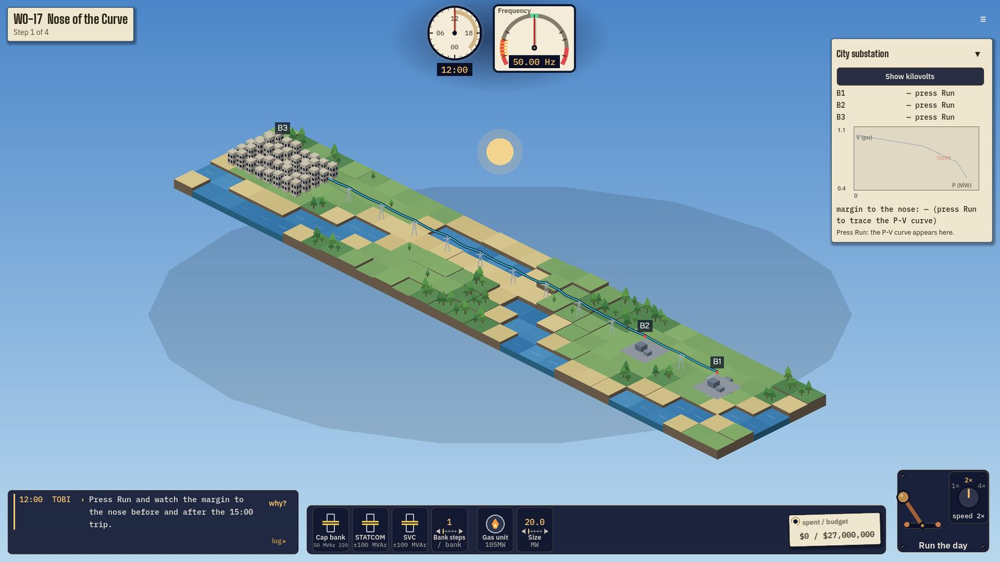

Per unit, the long line, loop flow and the nose of the P-V curve.

L17 Nose of the Curve: the margin before collapse
WO-14 Per Unit, Please
The State Ring · Hillside substation, 03:00
Three towns hang off a long 132 kV line through two stages of transformers. Keep every town bus between 0.95 and 1.05 per unit from 03:00 round to 03:00.
On the radio
ADA Same grid, three voltages. Stop counting kilovolts and count per unit: 1.00 is nominal, whatever the wire.
TOBI At seven in the evening everybody cooks at once and the far end sags. At three in the morning nobody does and it swells.
VANCE Tap-changer contacts wear out with every step. A relay that chatters all night is a bill I will not pay.
Steps
Press Run and read the town voltages in per unit, then in kilovolts.The same 0.95 pu is 10.45 kV at a town, 31.4 kV on the 33 kV bus and 125.4 kV on the line: one number for every voltage level.
Pick a transformer and move its tap, or put it on automatic.A positive tap step raises the low-voltage side by 1.25 %; the evening wants a boost, the small hours want it back.
Put both stages on automatic: the 132/33 kV one and the town transformers.Two tap changers in series hunt unless one waits for the other: give the upstream one the shorter delay.
Run the whole day.The test is the evening ramp from 17:00 to 20:00 and the fall after it.
per unitoltcvoltage controltap hunting
WO-15 The Long Line
The State Ring · Load-centre receiving station, midnight
A 400 kV line 350 km long brings a pithead coal plant's power to the load centre. Keep the receiving end between 380 and 420 kV, at 03:00 and at the evening peak, for the least money.
On the radio
ADA A long line is a capacitor with a conductor attached. At night, with nothing to carry, it charges up and the far end swells.
TOBI The plant holds 1.04 at its end to help the evening. At three in the morning that is 1.09 at yours. The relay trips the line at 110 %.
VANCE A reactor is cheap and dumb. A static var compensator is clever and costs ten times as much. Every breaker operation ages the bank.
Steps
Press Run and watch the receiving voltage at midnight, then at the evening peak.The same line is too high with a light load and too low with a heavy one; one fixed device cannot be right for both.
Add a shunt reactor at the receiving end for the night.A reactor absorbs reactive power; the line's own charging is what lifts the far end.
Add switched capacitor banks (or an SVC) for the evening. A bank is in all day until you switch it: click it and set Automatic (in below one voltage, out above another), and do the same for the reactor.A capacitor supplies reactive power where the heavy load needs it, so the line does not have to carry it.
Run the whole day.Midnight, the morning ramp, the 20:00 peak and the fall after it each ask for something different.
ferrantiline chargingshunt reactorsil
WO-16 Loop Flow
The State Ring · Eastgate control room, noon
A six-bus 220 kV ring has a short new line across it, and every evening that line overloads. Get through the day with no line above 100 %, and if you can, survive losing any one line.
On the radio
ADA Power does not go where you send it. It goes where the impedance is lowest, like water to the shortest drain.
TOBI Your predecessor built that chord to save forty kilometres. It saved the shortest drain, and now it is the only drain.
VANCE Reconductoring, a new line, a plant run out of merit: all three work, and all three go on my bill. Show me the cheapest that survives a trip.
Steps
Press Run and read the loading of every line at the evening peak.Loading is flow over rating; the line with the least impedance carries the most flow.
Relieve the overloaded line: reconductor it, commit the Eastgate plant, or open a ring line.Each lever changes who carries the power: more ampacity, a nearer source, or a different path.
Watch the N-1 number: what the worst line would carry if any one line were lost.A grid that is fine until the first trip is not secure: the trip moves its flow onto the neighbours.
Run the whole day.The evening peak is the test; the night shows what each fix costs in fuel.
loop flowimpedance divisionn 1reconductoring
WO-17 Nose of the Curve
The State Ring · City substation, 12:00
A heatwave city (300 MW at 15:00) hangs on a long double circuit, and one circuit is about to trip. Build voltage support at the city bus so the voltage does not collapse.
On the radio
ADA Every line has a maximum power it can deliver. At the top of the curve the voltage falls off a cliff.
TOBI At three the cooling load peaks and the second circuit goes. One circuit has to carry what two did.
VANCE Capacitors are cheap. A STATCOM is not. Convince me the difference is worth it, in the city's lights.
Steps
Press Run and watch the margin to the nose before and after the 15:00 trip.The margin is how many percent more load the line could still carry before the voltage cliff.
Build reactive support at the city bus: capacitors, an SVC or a STATCOM.Reactive power does not travel well; it has to be made where it is used.
Try a STATCOM or SVC at the city bus.A STATCOM keeps its current as the voltage falls; an SVC at its limit turns into a plain capacitor.
Run to the evening.The trip comes at 15:00; the hours after it show whether the margin holds.
pv curvevoltage collapsestatcomloadability
WO-18 Exam Bridge: Gauss-Seidel
The State Ring · The exam hall, 20:00
The textbook three-bus system, on the real grid. Predict three answers if you dare, then a new load joins bus 2 tonight: keep its voltage at 1.00 pu or more and every line within its rating, at the least cost.
On the radio
NIA This is the paper I sat. Iteration one of Gauss-Seidel, by hand, with a calculator that eats my batteries.
ADA Predict first. A prediction that lands within half a percent earns you a Called It badge; a miss costs nothing but teaches everything.
VANCE And then the real job. The generator at bus 3 has only so much reactive power to give.
Steps
Predict V2 after iteration 1, the converged V2 and the slack power (optional).Gauss-Seidel updates one bus at a time with the newest voltages; Newton solves them all at once and converges in fewer steps.
Raise the bus 3 voltage set-point and see how far it gets you.A PV bus holds its voltage only while its reactive power stays inside the unit's range.
Add a capacitor at bus 2.Reactive power made at the load does not have to travel down the lines.
Run the evening.Voltage and loading are checked every block for two hours.